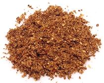

 |
Malay Curry Powder - MeatMalaysia & Singapore - serbuk kari - daging | ||||
| Makes: Effort: Sched: DoAhead: |
7 T ** 25 min Yes |
Malaysians use this powder for Meats and Poultry. For Fish, see our Malay Curry Powder - Fish. This recipe fits in a 4-oz spice jar. | |||
|
2 1/4 1 4 15 2 4 1 ----- tt |
T c T in pod t ---- |
Cumin seeds Coriander seeds Fennel seeds Red Chili dry (1) Cloves, whole Cinnamon stick Cardamom Peppercorns black -- Options Turmeric (3) |
Make: - (20 min)
|